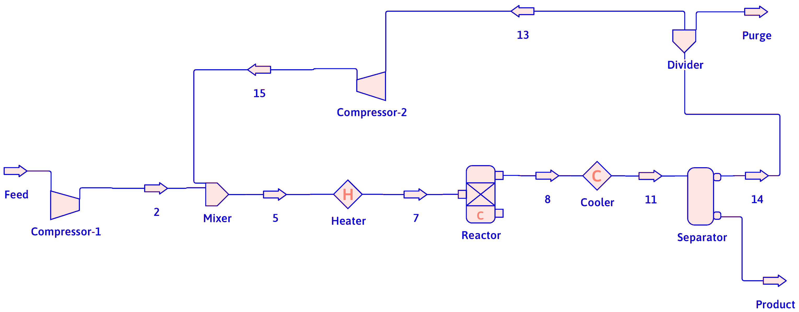
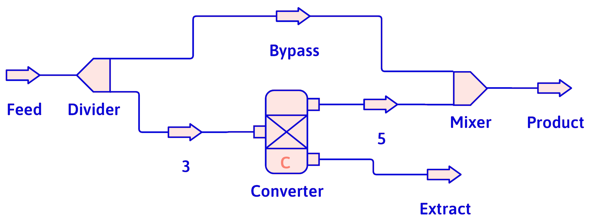
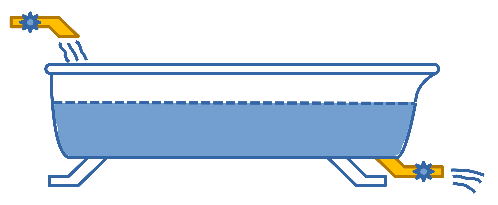

Speed Balancing
Just the Facts
DOFPro Team

Definitions
- PFD
- Process Flow Diagram or flowsheet. A schematic drawing of the mixers, dividers, separators, reactors and other unit operations used in the process.

- Recycle
- Part of a product stream is returned to the feed of a process.
Definitions (cont.)
- Bypass
- Part of the feed is routed around a process and mixed with the product.

- Purge
- A stream used to prevent buildup of trace components in a recycle loop.
Definitions (cont.)
- Tie Component
- A component of the feed which is unchanged by a process. Often useful for calculations but never necessary.
- Overall Balance
- Treating a PFD as a black box with only inputs and outputs.
Solving Your System Equations
Engineering is solving story problems where you often have to make up the story.
Bookkeeping is just arithmetic and definitions, but it needs to be done correctly.
There are many ways to solve a problem correctly. You want to develop a systematic approach, and not treat each problem as an isolated issue.
One Useful Technique
- Draw a flowchart (PFD) and fill in all given variable values.
- Convert quantities to a consistent set of units.
- Choose a basis of calculation (usually an amount or flow rate of one of the process streams).
Solving System Equations (cont.)
- Label unknown stream variables on the chart. Use a consistent system of labeling.
- Because volumes and volumetric flow rates are not conserved quantities, convert stream volumes to masses or moles, and volumetric flow rates to mass or molar flow rates.
- Convert mixed mass and mole units to either all mass or all mole units.
- Write material balance equations.
- Write other problem constraints as equations.
Solving System Equations (cont.)
- Do a Degree-of-Freedom analysis. Count the number of unknowns and the number of independent equations. Are they equal? What did you forget?
- Solve the equations.
- Convert the answers to the desired units.
Example
A bathtub with a partially open drain valve begins filling with water at a rate of 5 gallons per minute. The partially open valve is modeled by an equation relating the outlet flow rate to the depth of the water, \(\dot{V}_\mathrm{out} = 205.7 \sqrt{h}\) with the depth, \(h\), in centimeters and the flow rate, \(\dot{V}_\mathrm{out}\), in liters per hour. What is the steady-state depth of the water in inches?
Note
The solution given below is for the steady state, where the flow in equals the flow out. Solving the transient problem for the time to reach steady state involves using a transient mass (or volume) balance with an accumulation term. It requires the cross-sectional area of the bathtub, and results in a nonlinear ordinary differential equation that must be solved.
Solution
- Draw a flowchart (PFD) and fill in all given variable values. Here is a PFD with all given information.

\(\dot{V}_\mathrm{in} = 5\ \mathrm{gpm}\)
\(\dot{V}_\mathrm{out} = 205.7 \sqrt{h}\)
\(\updownarrow h\)
- Convert quantities to a consistent set of units. Since the units are mixed (not all SI or American Engineering), we’ll convert to SI to work the problem: Gallons per minute and liters per hour to cubic meters per second, centimeters and inches to meters.
\(5\ \mathrm{gpm} = 3.155 \times 10^{-4}\ \mathrm{m^3/s}\), \(1\ \mathrm{lit/h} = 2.778 \times 10^{-7}\ \mathrm{m^3/s}\)
\(1\ \mathrm{cm} = 0.01\ \mathrm{m}\), \(1\ \mathrm{in} = 0.0254\ \mathrm{m}\)
Solution (cont.)
- Choose a basis of calculation (usually an amount or flow rate of one of the process streams). The most useful basis is the input flow rate of \(5\) gallons per hour or \(3.155 \times 10^{-4}\) cubic meters per second. There are other less useful choices.
- Label unknown stream variables on the chart. Use a consistent system of labeling. We already did this in step 1.
- Because volumes and volumetric flow rates are not conserved quantities, convert stream volumes to masses or moles, and volumetric flow rates to mass or molar flow rates. There is no value in converting to a mass flow rate for this problem, because we are going to assume the temperature of the water, and therefore the specific volume doesn’t change appreciably. If we had to convert, we would use the approximate value of \(1000\ \mathrm{kg/m^3}\) (true at 4 °C).
Solution (cont.)
- Convert mixed mass and mole units to either all mass or all mole units. Not applicable for this problem.
- Write material balance equations. The mass balance is that at steady state the mass flow rate in equals the mass flow rate out, \(\dot{m}_\mathrm{in} = \dot{m}_\mathrm{out}\), and therefore the volumetric flow rate in equals the volumetric flow rate out because \(\dot{m}\) equals \(\rho \dot{V}\) and we assume that \(\rho\) doesn’t change, \(\dot{V}_\mathrm{in} = \dot{V}_\mathrm{out}\).
- Write other problem constraints as equations. The problem constraint is \(\dot{V}_\mathrm{out} = 205.7 \sqrt{h}\) which we’ll convert to meters and cubic meters per second, as discussed in The Most Annoying Equation Conversion video. The result is \(\dot{V}_\mathrm{out} = 5.714 \times 10^{-4} \sqrt{h}\), with \(\dot{V}_\mathrm{out}\) in \(\mathrm{m^3/s}\) and \(h\) in \(\mathrm{cm}\).
Solution (cont.)
- Do a Degree-of-Freedom analysis. Count the number of unknowns and the number of independent equations. Are they equal? What did you forget? We have two equations, the volume balance, and the valve equation, in two unknowns, the volumetric flow rate out, \(\dot{V}_\mathrm{out}\), and the steady-state depth, \(h\).
- Solve the equations. The solution is \(\dot{V}_\mathrm{out} = 3.155 \times 10^{-4}\ \mathrm{m^3/s}\), \(h = 0.3049\ \mathrm{m}\).
- Convert the answers to the desired units. The depth in meters converted to inches is \(12.00\ \mathrm{in}\).
Solution Notes
The note number corresponds to the solution step number.
- If there were more species than one (water) we would have labeled the PFD with the species, and, if known, the flows or compositions.
- See Is Furlongs per Fortnight a Thing? for details on conversions.
- Neglecting the change in density with temperature will only affect the answer in the fourth significant figure, so it will not appreciably affect the answer.
- The details of the conversion of the equation are on the web page for the video.
- A more detailed solution is on the web page for the video.
Speed Tips
- If it’s not needed, don’t solve for everything.
- Write equations in order of number of unknowns from fewest to most.
- Try overall balances first.
- Check out if any tie components would be useful.
- Remember mole fractions or mass fractions add up to 1.
- Usually, solving a recycle loop requires a complete set of equations around the loop.
The Takeaways
- Learn to recognize things given in the definitions like a PFD, recycle, and bypass.
- Develop a systematic style to set up and solve problems. Use the given style if you don’t have your own.
- Check out the speed tips and see if they help.
Thanks for watching!
The Full Story companion video is in the link in the upper left. The companion video in the series, How to Keep Your Balance, is in the upper right. To learn more about Chemical and Thermal Processes, visit the website linked in the description.